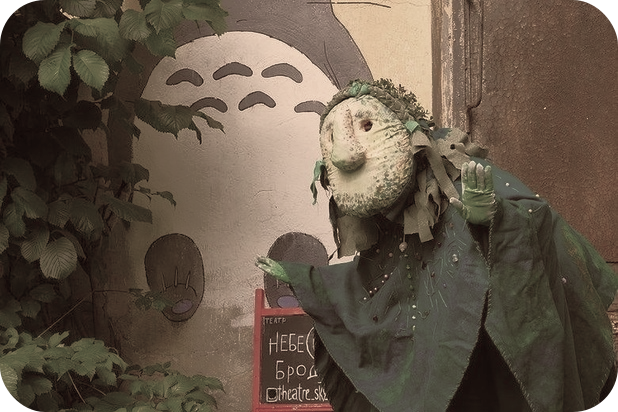

F·R·I·E·N·D·S
Друзья
Ситком
Кафе
Кухня моники в центре
«Друзья» — американский ситком, повествующий о жизни шестерых друзей.Признан одним из лучших комедийных сериалов в истории американского телевидения и стал одним из наиболее знаменитых проектов 1990-х годов.СПб, Большой проспект ПС 81 (м.Петроградская)
Дворик в стиле аниме
«Мой сосед Тоторо» - полнометражный аниме-фильм, созданный японским мультипликатором Хаяо Миядзаки в 1988 году.СПБ, проспект Обуховской Обороны, 105
Harry Potter
Гарри Поттер
Серия фильмов
Кафе
Сувениры
Лавка «Косой Переулок»
Серия фильмов о Гарри Поттере — серия фильмов, основанных на книгах о Гарри Поттере английской писательницы Дж. К. Роулинг.Серия выпущена компанией Warner Bros. и состоит из одиннадцати фильмов в жанре фэнтези, включая основную серию — начиная с «Гарри Поттер и философский камень» (2001) и заканчивая «Гарри Поттер и Дары Смерти. Часть 2» (2011).СПБ, Большая Пушкарская ул., 38